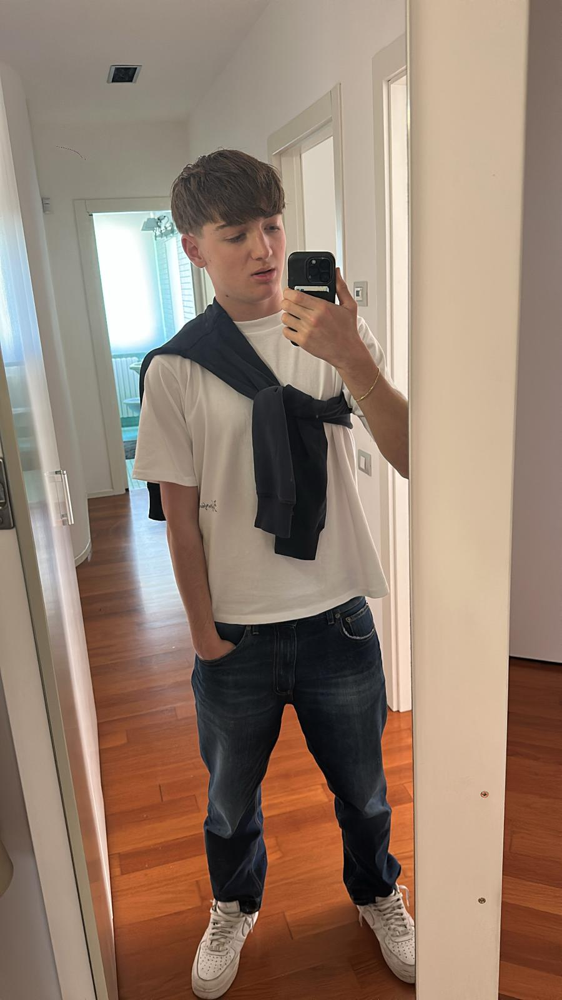

Portfolio Esame di Stato

Riccardo Ciarmatori
Studente di Informatica e Telecomunicazioni · IIS Marconi Pieralisi
Mi chiamo Riccardo, ho 18 anni e sto per concludere il mio percorso all'indirizzo Informatica dell'IIS Marconi Pieralisi. Mi considero una persona altruista, rispettosa ed educata, con una forte curiosità per il mondo della tecnologia.
Durante questi anni ho sviluppato competenze concrete in programmazione, sviluppo web e reti informatiche, lavorando con linguaggi come HTML, CSS, JavaScript, PHP e SQL. Quello che mi appassiona di più è la possibilità di trasformare un'idea in qualcosa di funzionante e utile.
Fuori dalla scuola sono un grande appassionato di calcio, sport che pratico da quando avevo sei anni, e seguo anche il tennis. Nel tempo libero ascolto molta musica, che per me è il modo migliore per staccare la testa.
Dopo il diploma, il mio obiettivo è entrare nel mondo del lavoro e mettere in pratica tutto quello che ho imparato.